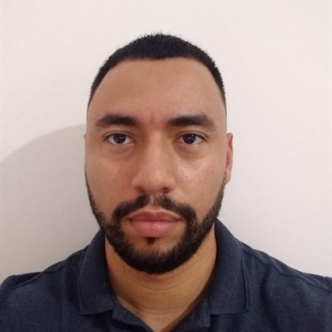

Construindo e liderando plataformas transacionais de alto volume há mais de 8 anos. Especialista em Node.js, TypeScript, NestJS e AWS.

Engenheiro de Software Backend Sênior e Tech Lead com mais de 8 anos de experiência construindo e liderando plataformas transacionais de alto volume e alta disponibilidade em Node.js e TypeScript. Atuação recente em sistemas que atendem +2 milhões de usuários e processam ~12 milhões de requisições/dia, com requisitos críticos de consistência, performance e disponibilidade.
Experiência sólida em arquitetura de microsserviços, comunicação assíncrona (SNS/SQS, Kafka, RabbitMQ), cache distribuído (Redis), observabilidade e segurança de APIs, sempre apoiada em Clean Architecture, DDD e SOLID. Vivência em liderança técnica de times de 4 a 12 pessoas, conduzindo decisões arquiteturais, code reviews, definição de boas práticas e mentoria de desenvolvedores.
Pós-graduado em Arquitetura de Software pela FIAP. Fundador e CTO da LUCSAN, software house de soluções sob demanda e produtos digitais próprios.
Tecnologias que estou explorando e aprofundando
Disponível para oportunidades e colaborações